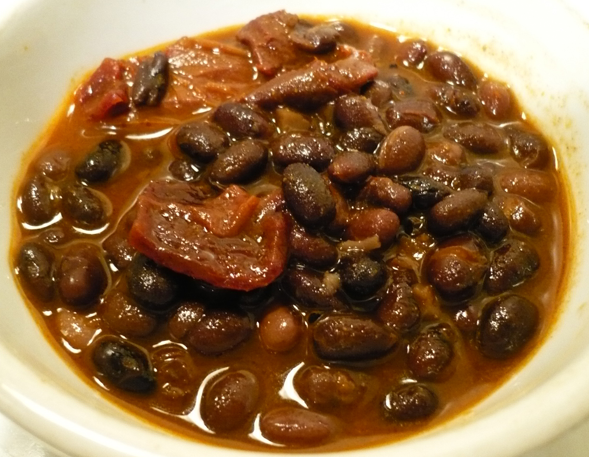

Home
Bean Stew

Description
This stew is so simple, yet versatile. It's main component is tomatoes and a variation of beans.
And what's not goot about beans? Packed with protein, and fibers, healthy an tasty at the same time!
Ingredients
- Beans - kidney beans, black beans, green beans...whatever's in your pantry
- Fresh tomatoes or chopped canned tomatoes
- Bell pepper
- Onions
- Garlic
- Tomato paste
- Oil
- Any arabic spice blend, lik baharat or ras el hanout
- Salt, pepper
Steps
- Drain the beans, set aside
- Heat a pan on medium heat
- Chop onions into cubes and mince garlic
- Cube bell pepper and cut tomatoes
- Add oil, onions and garlic to the pan and saute until onions are transculent
- Add bell pepper
- Add tomato paste and fry until little browning
- Deglace with the tomatoes
- Add your spice blend of choice
- Add beans and let it simmer until it reaches the desired consistency
- Seanson to taste with salt and pepper